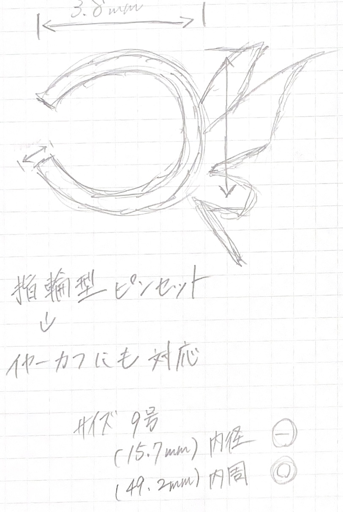
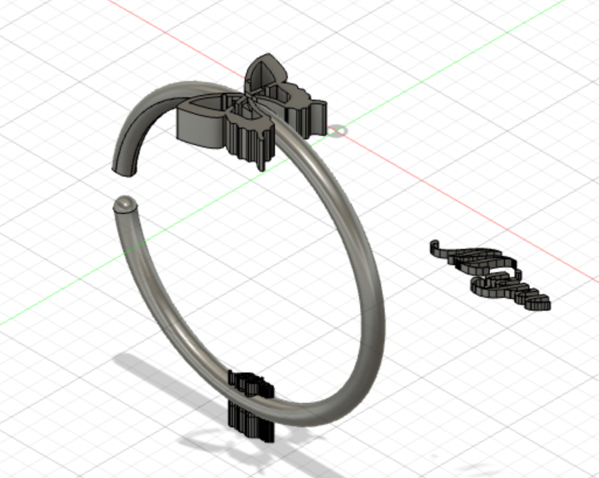
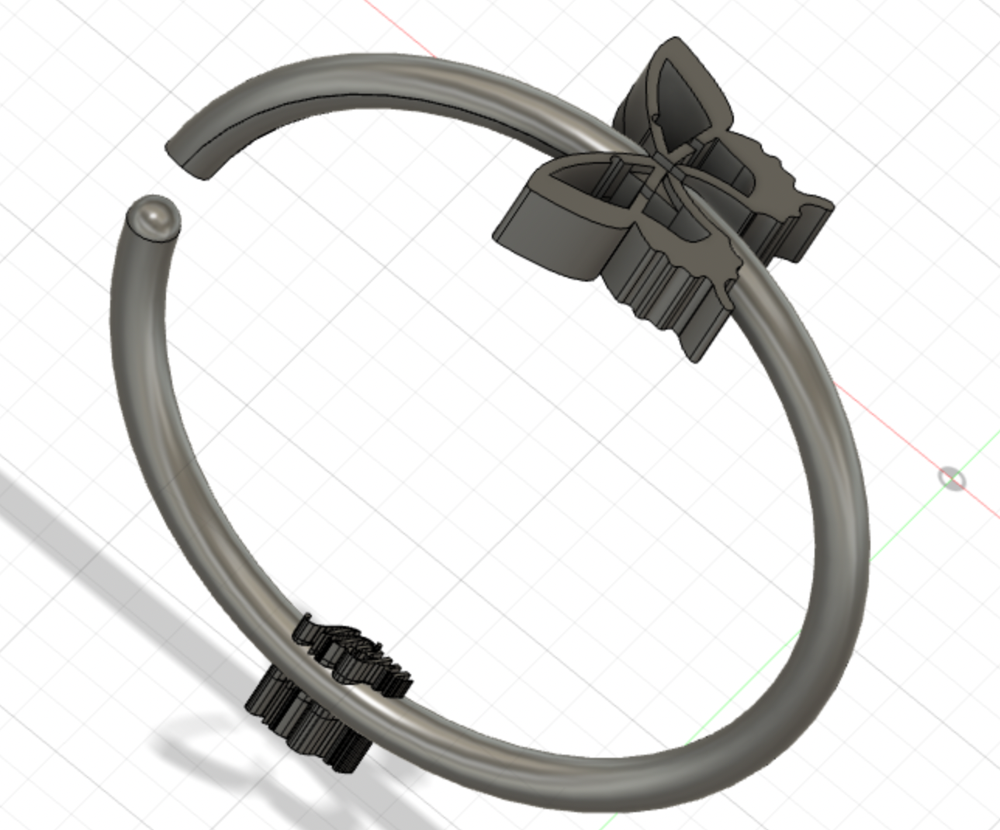
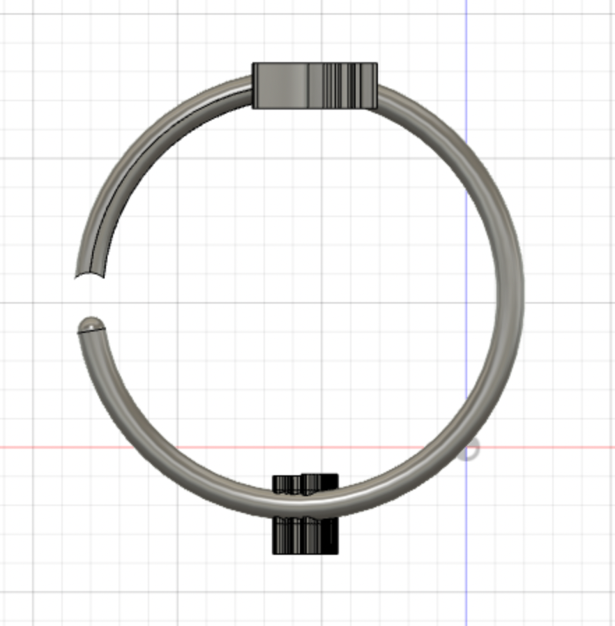
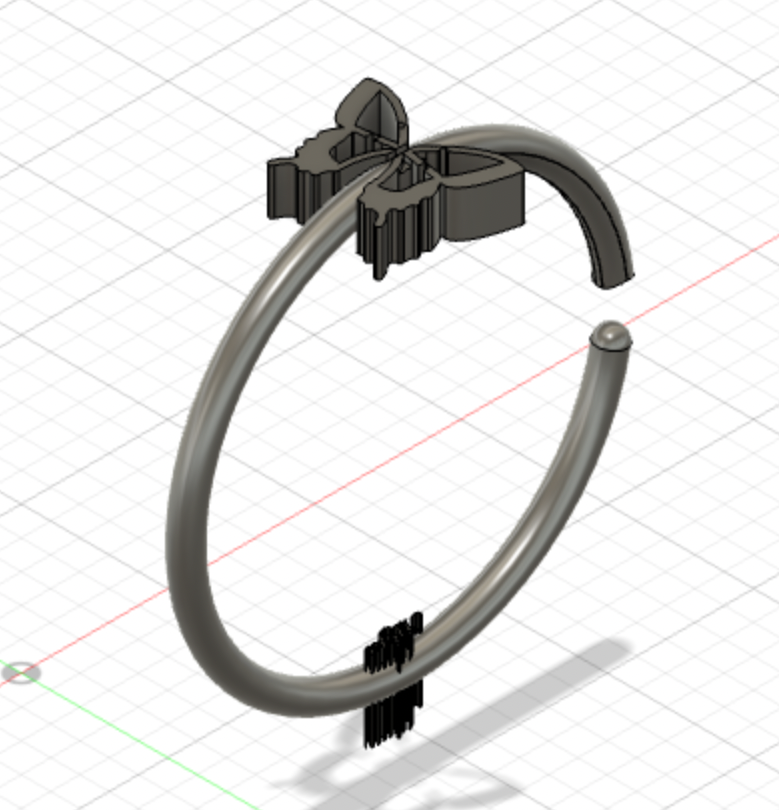
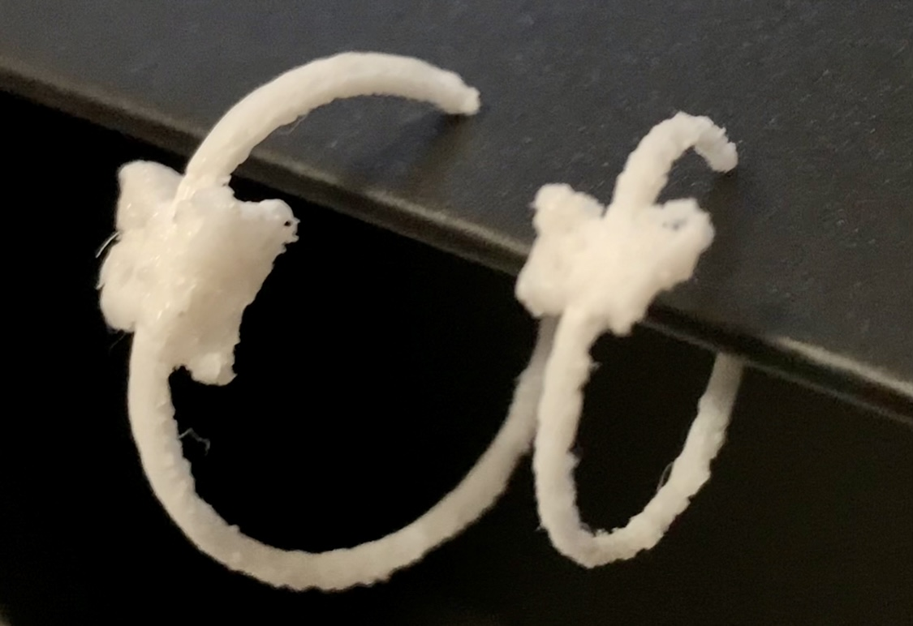
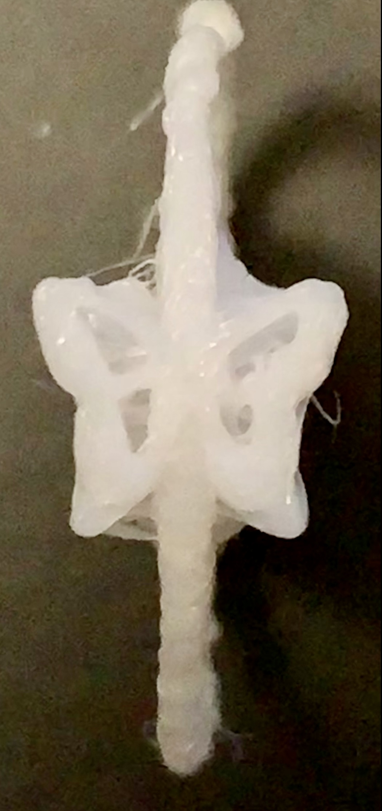

進化の模索/3Dプリント&ドキュメンテーション
1.[作品のタイトル]
~Ring cuff~
2.[構想段階の手書きスケッチ]

2.[イメージ]

3.[実際に作った作品の画像]
 
4.[設計ファイル]
(stlファイルをfilesフォルダにいれて、そこにリンクを貼ってください)
5.[作品の説明]
デザインは私が好きな蝶々と自分のイニシャルを入れることで、実際この作品にアクセサリーとして愛着を持ってつけられるようにしました。
ただの指輪だとピンセットにはならないので、指輪に切り込みを入れることでピンセットという機能だけでなくイヤーカフにもできるようにしました。
6.[なぜこの作品を作ろうという想いに至ったか]
たまたま私が指輪をつけていたので、道用先生から指輪という案があり面白そうだと思い指輪に決めました。
いつでも持ち運びができる事を目的としていたので、私が普段から身につけている指輪にしようと思いました。
7.[制作プロセスの中で調べたこと]
ソフトの機能→押し出し、対照、結合、切り取り、フィレット、尺度、SVG
参考にしたリンク→https://youtu.be/rUUPQOol-j8